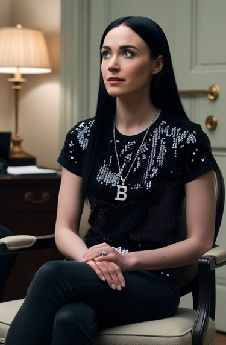
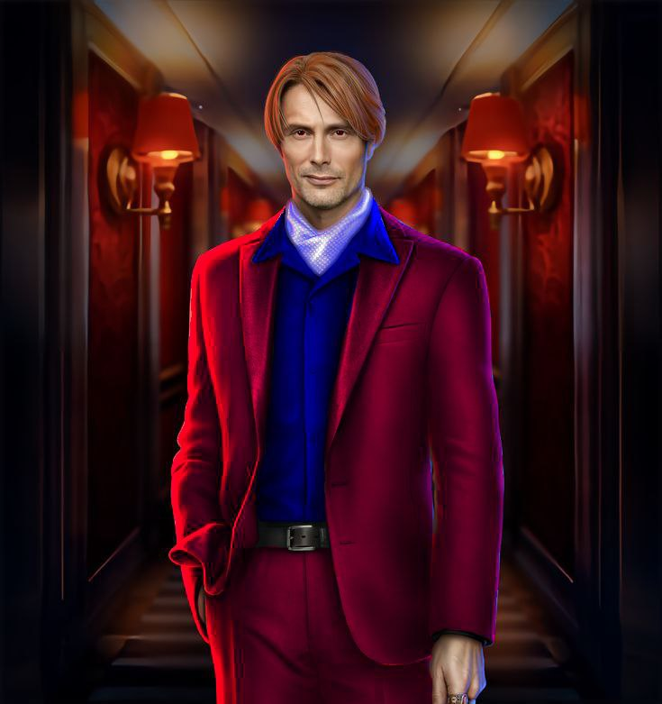

Молодая черноволосая девушка с серо-голубыми глазами сидела у себя дома в кресле. Её длинные и прямые волосы были до пояса. Девушка носила чёрные брюки и балетки, чёрную футболку с серебряными блёстками и подвеску с латинской буквой "B". Складывалось такое ощущение, будто бы эта девушка пришла на чьи-то похороны. Впрочем, повод для грусти действительно был.
Напротив девушки в сером кресле сидел мужчина лет 40 в красивом костюме - гранатовом пиджаке и гранатовых брюках, в синем галстуке и белоснежной рубашке. Глаза мужчины были бордово-карими, почти что чёрными, а тёмно-русые волосы имели рыжеватый оттенок. Выражение лица мужчины было спокойным и очень сочувствующим. Большинству людей этот человек показался бы довольно привлекательным, особенно ввиду того, что он выглядел гораздо моложе своих лет.
Интерьер комнаты показывал, что здесь явно живёт человек, любящий литературу. Здесь были библиотека и что-то
вроде офиса секретаря: парта и стул на колёсах из всеми известной «Икеи». Вокруг также стояли деревянные
шкафы, диван и мягкие кресла.
Девушка была встревожена и расстроена. Она старалась проявлять стойкость и не плакать, однако у неё это
получалось плохо. Прозрачная слеза покатилась по её правой щеке.
- Извини, Деян, - промолвила девушка, стесняясь того, что плачет. - Я просто очень переживаю за Грегора.
- Ну-ну, Белла, - мужчина протянул ей платок, чтобы она могла вытереть слёзы. - Я тоже переживаю насчёт
всего этого. Но, как твой психолог, я больше волнуюсь за твоё состояние в данный момент. Хотя, конечно,
невозможно закрыть глаза на то, что кто-то регулярно похищает людей и делает это бог знает зачем. Особенно
много похищений в нашей стране. В этом городе.
- Понимаешь, Деян... Грегор не просто мой клиент. Я являюсь личным агентом для многих футболистов, но Грегор
стал… моим другом. Мысль о том, что его похитили и что в данный момент он, возможно, страдает, наводит на
меня ужас, - призналась Белла. Деян понимающе кивнул.
Отношения между ними были не только как у врача и
пациента. Деян и Белла уже стали довольно близки, обращались друг к другу на "ты" и только по имени. Доктор
Ловрен знал Беллу Ковачич как самую добрую женщину из своего окружения. Он считал её идеальной практически
во всём. Кроме того, многие их интересы совпадали: оба ценили литературу и искусство, а также любили
смотреть вместе футбол.
- Белла, ещё слишком рано оплакивать Грегора Шкорича. Ведь до сих пор неясно, зачем Футбольный Похититель
всё это делает. Вполне возможно, он не убийца, и похищает людей для иной цели, которая нам пока неизвестна.
- Откуда такая уверенность? - не понимала Белла, немного успокоившись.
- Я не уверен, я просто предполагаю. Однако я должен спросить тебя, Белла. Ты переживаешь только за игроков?
Ты не боишься, что Похититель придёт лично за тобой? - задал вопрос Деян. Белла на мгновение задумалась.
- Нет. За себя я не волнуюсь. Я тревожусь только за игроков и других людей. Маловероятно, что Футбольный
Похититель захочет поймать именно меня. Хотя я определенно подхожу под категорию людей, которых он похищает,
- ответила Белла, взяв с круглого кофейного столика из тёмного дуба стакан с водой, чтобы отпить из него.
- Ты права. Наш Похититель заинтересован в людях, которые так или иначе связанны с футбольной сферой, -
подтвердил Деян. - А ты как раз футбольный агент. Вряд ли Футбольный Похититель придёт именно за тобой.
Кстати, можно сказать, что я тоже попадаю в категорию его интересов, ведь я - психолог футбольного агента.
- Верно. Однако нужно отдать Похитителю должное. Он наверняка тщательно выбирает своих жертв, может
присматриваться к определенному человеку очень долго... Никогда не было таких случаев похищения от его рук,
когда жертва была совсем не связана с футболом, - Белла за это время уже полностью опустошила стакан и
чувствовала себя спокойнее и увереннее, обсуждая со своим психологом известного преступника.
- Да, надо сказать, он весьма умён и коварен. Но Белла, ты главное не переживай. Если из твоего окружения
снова пропадёт кто-то из игроков, не вини в этом себя, ты уж точно во всём этом не виновата. Просто соблюдай
меры безопасности, на всякий случай, - посоветовал Деян. - Я всегда помогу тебе в чём угодно, если тебе это
потребуется. Ты можешь обращаться ко мне за помощью хоть в самый поздний час, - мужчина тепло улыбнулся.
Белла улыбнулась в ответ.
- Благодарю, Деян.
Внезапно напольные часы с маятником пробили 7 раз. Было ровно 19:00.
- Время ужинать, - сказал Деян, переглянувшись сначала на часы, потом снова на Беллу.
- Именно. Всё уже готово, осталось только накрыть на стол. Не поможешь? Ты знаешь, где у меня столовые
принадлежности. А я пока встречу нашего почётного гостя, он будет с минуты на минуту, - решила Белла,
поднявшись с кресла.
- Конечно, - согласился Деян и ушёл в столовую. Как раз в этот же момент раздался звонок в дверь.
На пороге стоял черноволосый парень лет 30. У него были чёрные глаза, которые было тяжело разглядеть из-за
волос: они почти что полностью закрывали лицо мужчины. Чёлка шла с двух сторон, сзади волосы немного
закрывали шею. На мужчине был классический костюм полицейского – синий пиджак со значком, брюки, галстук,
ботинки. Это был агент ФБР Эдгар Гринвуд.
- Здравствуйте, мисс Ковачич. Рад Вас видеть. Могу я войти? - поздоровался он.
- Добрый вечер! Мы как раз Вас ждали, мистер Гринвуд! Прошу, заходите, - Белла приглашающим жестом позвала
гостя к себе в дом.
Мистер Гринвуд вошёл в прихожую и снял с себя куртку, пока Белла закрыла за ним дверь. Хозяйка дома
доброжелательно улыбнулась.
- Пойдём сразу в столовую, Эдгар. Ты наверняка голоден. Званый ужин готов, - Белла обратилась к Эдгару на
«ты» и по имени и отворила дверь в столовую. Девушка была давно знакома с агентом, поэтому могла позволить
общаться с ним более неформально.
Около большого стола стоял Деян, который как раз всё подготовил. Он подошёл к Эдгару поздороваться, пожав
ему руку.
- Добрый вечер, мистер Гринвуд.
- Здравствуйте, доктор Ловрен. Деян, - улыбнулся Эдгар и сел за стол напротив психолога. Белла тем временем
подняла крышку с большой тарелки и поставила блюдо на стол, принявшись за окончательные штрихи сервировки.
- Пахнет восхитительно, - сделал комплимент Эдгар. Белла улыбнулась, накладывая Деяну и Эдгару одинаковые
порции, а себе порцию поменьше.
- Паэлья. Национальное испанское блюдо. По твоему заказу, Деян, - подмигнула девушка, в то время как Деян
налил каждому по бокальчику красного вина. - Всем приятного аппетита.
- Спасибо, - ответил Эдгар и принялся за еду, как и Деян.
- Это действительно очень вкусно. Ты знаешь толк в кулинарии, Белла, - заметил Эдгар.
- Благодарю, Эдгар. На самом деле, я не очень люблю готовить. Но недавно я посмотрела одно кулинарное шоу и
вдохновилась на то, чтобы создавать разные блюда чаще. Это оказалось захватывающе. А ещё Деян посоветовал
мне готовить больше, и мне это понравилось, - рассказала Белла.
Спустя какое-то время Эдгар перешёл к сути дела.
- Белла, ты знаешь, что я пришёл к тебе не только по приглашению на ужин. Мне нужно обсудить с тобой и
Деяном Футбольного Похитителя.
- Конечно, я поняла. Я не удивлена. Слушаю, - сказала Белла.
- Три дня назад твой клиент Грегор Шкорич пропал без вести. И было установлено, что, вероятнее всего, он был
похищен тем самым преступником. Может быть, ты, как его агент, можешь сообщить нам что-то важное? Где ты
видела его в последний раз? - спросил Эдгар.
Агент полиции был очень храбрым и во всём хотел идти до конца.
Он давно уже был одержим идеей поймать Футбольного Похитителя. Эдгар за свою карьеру раскрыл много
преступлений и поймал несколько особо опасных преступников. Но делал он это не ради себя: он хотел, чтобы
другие люди были в безопасности. Пока что Футбольного Похитителя вычислить у Эдгара не получалось. Он
надеялся на помощь своих хороших знакомых – психолога Деяна Ловрена и футбольного агента Изабеллы Ковачич.
- Последний раз я видела Грегора прямо перед матчем «Хорватия – Турция». И всё. Далее команды сыграли в
ничью. И все мы знаем, что к этому привело, - ответила Белла на вопрос Эдгара.
- Да. Футбольный Похититель явный поклонник Барселоны и сборной Хорватии, он ценит справедливость. Он
приступает к своей тёмной деятельности всегда после того, как одна из этих команд играет вничью. Если был
выигрыш или проигрыш - Похититель бездействует. Это весьма странно. Понятно, если бы он всегда делал это
после победы - устроить пиршество. Или после проигрыша - выразить гнев. Но после ничьей... - размышлял
Эдгар.
- Футбольный Похититель не любит скучать, - подключился Деян, прожевав кусок мяса. - Он смотрит все матчи
своих команд, а когда они играют с равным счётом, ему это не нравится. Во-первых, ему может быть скучно
смотреть некоторые ничейные матчи: видите ли, 0:0. Что за скукотища... Во-вторых, в его голове всегда есть
либо победитель, либо проигравший. Третьего не дано.
- И то верно, - согласилась Белла. - Действительно, в этом что-то есть. Кстати, сколько именно на его счету
жертв? Быть может, он собирает команду из 11 человек?
- Мы не имеем ни малейшего понятия о том, кто он и зачем это делает, даже то, откуда он родом. Мужчина это
или женщина? Вероятнее всего, мужчина, ибо большинство серийных преступников в истории – именно мужского
пола. Кто он по национальности? Точно неясно. Были зафиксированы случаи похищения в разных городах и
странах. В Хорватии (в основном Загреб, Задар и Сплит), Испании (Мадрид, Барселона, Севилья), в Лондоне и
даже Флоренции. Очень высока вероятность, что все эти похищения совершил наш таинственный Футбольный Дракон.
Мне кажется, он либо хорват, либо испанец. Или просто любит жить там, где играют его любимые команды, и
иногда путешествовать. А жертв у него уже точно больше 11, - договорил Эдгар.
- Не столь путешествовать, сколько прятаться. Он, возможно, был бы даже и не против, чтобы его поймали. Он
лишь не хочет, чтобы его личность публично раскрыли. Этого он боится больше всего. Поэтому он прыгает
туда-сюда, чтобы запутать, - предположил Деян. - А ещё... у меня есть теория о том, зачем же Похитителю всё
это нужно.
Эдгар и Белла с интересом переглянулись на Деяна, оторвав взгляд от еды.
- Вы помните самый древний и жуткий аналог футбола? Когда победившая армия играла с отрубленной головой
врага, пиная её? Так вот. Я, конечно, искренне надеюсь, что наш Похититель – не потрошитель и не вытворяет
такое, но… Он может похищать тех, кого считает врагами, чтобы наказать их, может и «поиграть» с ними...
Возьмём того же Грегора Шкорича. Последний матч «Хорватия – Турция». Хорваты вели 1:0, но на последней
минуте пропустили гол от турков. Главным виновником гола был именно Грегор. Наверное, это очень разозлило
Похитителя, и он решил проучить беднягу. По крайней мере, хотя бы в данном случае этот мотив звучит логично,
- предположил Деян.
- А ты, возможно, и прав. Помните тех людей из Барселоны, из-за которых всеми любимый Лионель Месси не смог
остаться в своём легендарном футбольном клубе? Где сейчас эти люди? Да чёрт его знает. Исчезли после
очередного ничейного матча. Тут Похититель, наверное, хотел отомстить руководству клуба за то, что оно не
смогло сохранить такого драгоценного игрока, - согласился Эдгар, вспомнив другой случай.
- Очень логичное предположение, - кивнула Белла. – Но ведь это лишь гипотеза. Её возможно либо подтвердить,
либо опровергнуть. Может быть, Похититель ведёт свою тёмную деятельность для иной цели.
- Тоже верно. В любом случае, дело будет раскрыто, - дал слово Эдгар.
Белла снова посмотрела на полицейского.
- Это всё, что ты хотел обсудить, Эдгар? - поинтересовалась Белла.
- Ну... Как вы знаете, через несколько минут «Барселона» играет с «Райо Вальекано». И если команды сыграют в
ничью, то нас ждёт очередное исчезновение, - тревожно сообщил Эдгар. Белла постаралась улыбнуться.
- Я уверена, победитель будет выявлен. А именно, это будет Барселона. И Футбольный Похититель не выйдет на
охоту в ближайшие дни.
- Да, вряд ли сегодня будет ничья, - сказал Деян, закончив ужинать. – Матч слишком важный.
Белла кивнула, допив бокал вина, давно уже опустошив тарелку с паэльей.
- Спасибо, что пригласила на ужин. Мне очень понравилось, - поблагодарил Эдгар. – И спасибо за
сотрудничество.
- Ты что, уже уходишь? Эдгар, останься. Я как раз планировала посмотреть этот самый матч вместе с Деяном. Ты
можешь составить нам компанию, - предложила Белла.
- В самом деле?
- Именно. Я подготовлю телевизор в гостиной.
- Хорошая идея. Будете болеть со мной за Барселону, - хмыкнул Деян, являясь преданным поклонником
каталонского клуба.
Белла сопроводила мужчин в гостиную и принялась настраивать телевизор, захватив с собой большую пачку чипсов
для просмотра матча.
Деян плюхнулся на мягкий пуфик на полу, а Эдгар приземлился на диван рядом с Беллой. На кофейном столике
рядом уже стояла плошка с чипсами. Все с интересом смотрели матч, не забывая периодически переговариваться
друг с другом.
- А кто тебе больше всего нравится из игроков, Деян? - поинтересовалась Белла, начав кушать чипсы. - Я очень
люблю Хави, а ты?
- Когда я был помоложе... мне нравился Лионель Месси. А Криштиану Роналду я презирал. Теперь мне нравятся
все. Но особенно я люблю Йохана Кройффа и Серджи Бускетса. Ну и Хави мне тоже нравится, разумеется, -
поделился Деян.
- А мне нравится Ламин Ямал. Перспективный парень. Ему всего 16 лет, но вы вообще видели, что он творит? -
заметил Эдгар. - Ещё вратарь у них - стенка. Тер Штеген. Хороший.
Сперва матч начался очень интересно – «Барселона» явно играла лучше. Позже «Райо» перехватил инициативу. Два
гола были отменены из-за офсайда. В итоге, никто так и не смог забить - итоговый счёт на 97 минуте матча
остался 0:0. Ничья.
Деян хмыкнул, понимая, что всё это значит, словно не понимая всю серьезность ситуации, хоть обычно и
расстраивался, когда его любимая команда не одерживала победу. Эдгар встревожился. А Белла... ей было
довольно скучно смотреть эту игру. Она в основном только ела чипсы и болтала с ребятами.
- Ну что ж... Футбольный Похититель, bonsoir, - заявил Деян, ехидно улыбнувшись.
- Не смешно! Это очень серьёзно. Когда счёт ещё и нулевой, Похититель обычно может выкрасть даже несколько
человек за раз! - разволновался Эдгар. Белла тяжело вздохнула, на её лице вдруг появилась какая-то странная
гримаса, когда она положила левую руку на плечо Деяна, а правую - на плечо Эдгара.
- А теперь давайте будем честны. Всё это время Футбольный Похититель наблюдал за нами. И вы оба были правы
насчёт него во многом, но далеко не во всём.
Деян расхохотался, но его смех продлился недолго, когда он увидел, какие огоньки мелькнули в глазах Беллы.
Эдгар хотел было достать из кармана что-то для самообороны, но слишком поздно.
- Да. Футбольный Похититель - это я, - промолвила Белла. – Знаете ли, это довольно обидно, когда про тебя
говорят такие гнусные и неправдивые вещи. Но задумайтесь: вы теперь знаете о том, кто виноват во всём этом.
Только что Барселона сыграла в ничью. Что же это значит? Правильно. Вы наконец узнаете истинные мотивы того,
кого так и не смогли поймать. Теперь я вас никуда не отпущу…